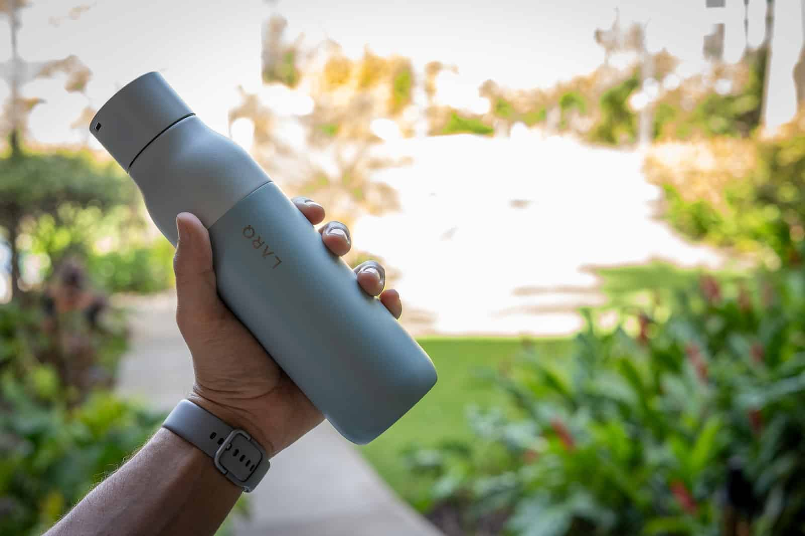

Did you know that In the US, packaging makes up the largest category of municipal waste. Single-use items make up 10% of trash in the US and 29% of greenhouse gases come from stuff we make, consume and dispose of. It takes a lot of energy to make single-use items. In addition, plastic is made from petroleum and toxic materials such as benzene and vinyl hydrochloride, which are harmful to humans (according to Vox)
We can lessen our plastic consumption in a few ways: 1. Use recyclable water bottles instead of plastic 2. At the end of the school year, if you have extra bins or containers, find friends or donate them near by- Don’t throw them out!
lastic waste is fast becoming a widely recognised problem. While it is an important material for our economy, providing multiple benefits to modern day living, plastic can take thousands of years to biodegrade. It takes up valuable space in landfill sites and is polluting the natural environment, having a significant impact on our oceans. By 2050 there will be a tonne of plastic for every tonne of fish. (Recycling technologies)